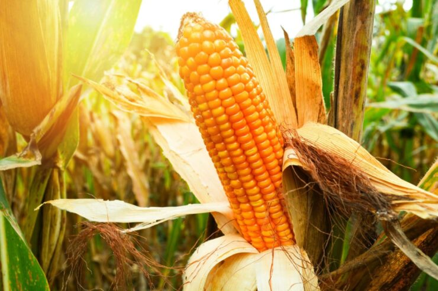
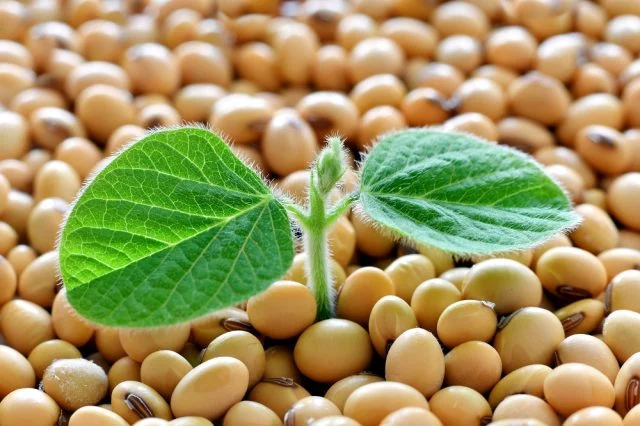
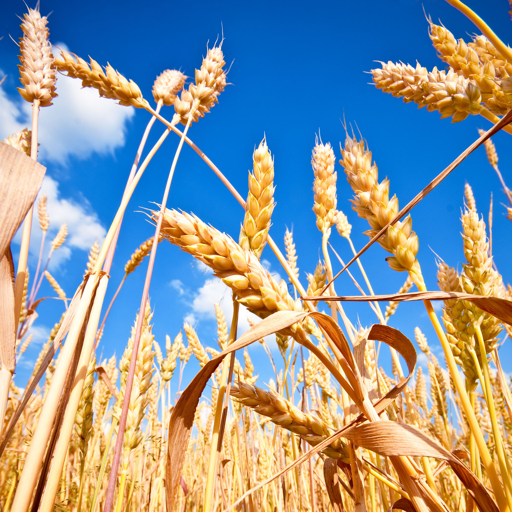

Milho

O milho (Zea mays) é um cereal cultivado em grande parte do mundo e amplamente utilizado como
alimento humano e ração animal devido às suas qualidades nutricionais. O milho é uma planta da
família Poácea, originária da América Central, e tem grande capacidade de adaptação a diversos
climas, sendo cultivado em praticamente todas as regiões do mundo. Quanto ao uso, o milho é
versátil: seus grãos podem ser consumidos frescos, secos, transformados em farinha, óleo, xarope
de milho e até mesmo em biocombustíveis.
Soja

A soja (Glycine max) é uma planta originária da China, pertencente à família Fabaceae, é
conhecida por seu alto teor de proteínas e óleos. É utilizada na alimentação humana, animal e na
indústria de óleos vegetais. As sementes de soja são fundamentais na produção de tofu, leite de
soja e diversos produtos alimentícios.
Trigo

O trigo (Triticum aestivum) é um dos cereais mais importantes do mundo, utilizado principalmente
na produção de farinha para pães, bolos, massas e outros alimentos. Originário do Oriente Médio,
é cultivado em diversas regiões com climas temperados. As espigas do trigo contêm grãos ricos em
amido e proteínas.